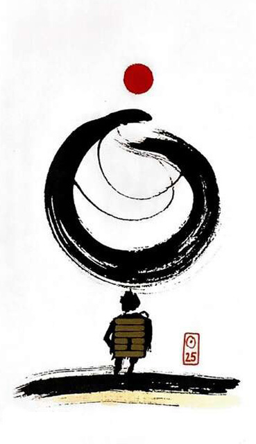

천뢰무망
평괘 12★ 운명카드 2
아무것도 할 수 없다
마음을 비우고 있어야 한다거짓과 잡념이 없다욕심을 내려 놓고 생각을 텅 비운 상황을 표현한 그림예상치 못한
무상무념.결백.천진함.깨끗함.순수한.신성함.예측불허.단순함.
연애운
운명의 고리가 강한 관계
사업운
판단이 서지 않는 상황.불확실성
금전운
예상치 못한 당첨.횡재수
속마음
썸순수하게 끌리는 마음
1년 이상편안하고 안정적인 마음
이별 후헤어지고 싶어도 헤어질 수 없는 마음
솔로연애운
운의 흐름에 맡김(주위카드 보고 리딩)
건강운
불면증~자연 치료법 권유